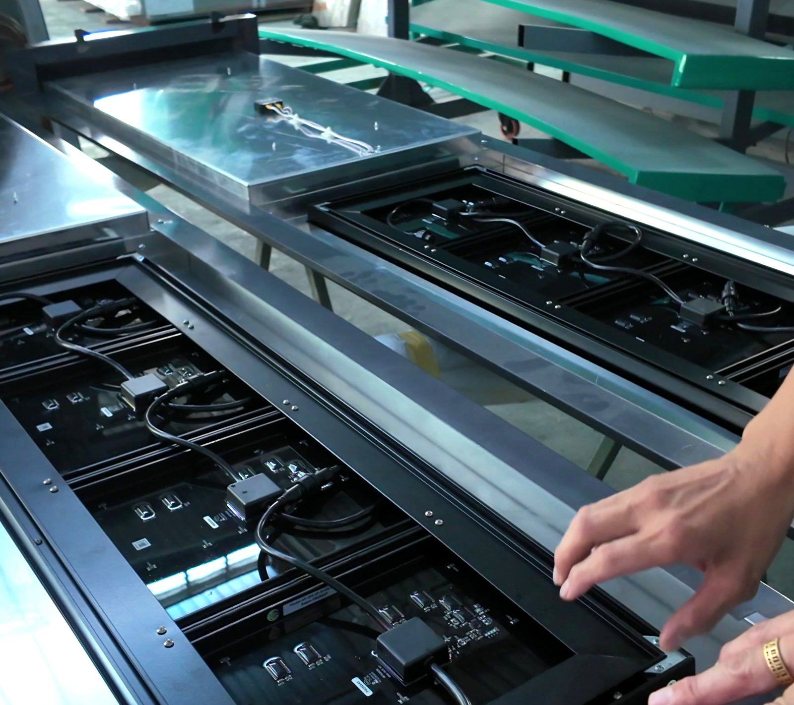
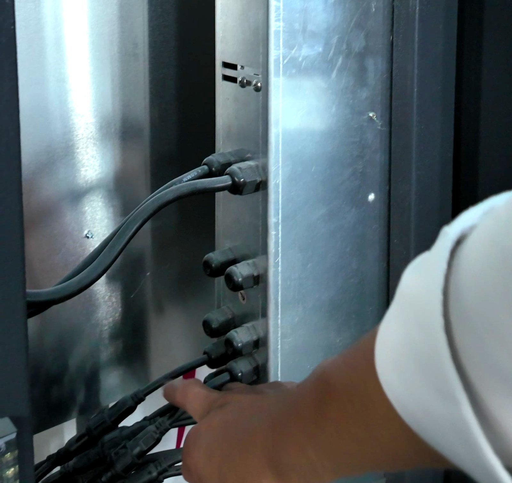
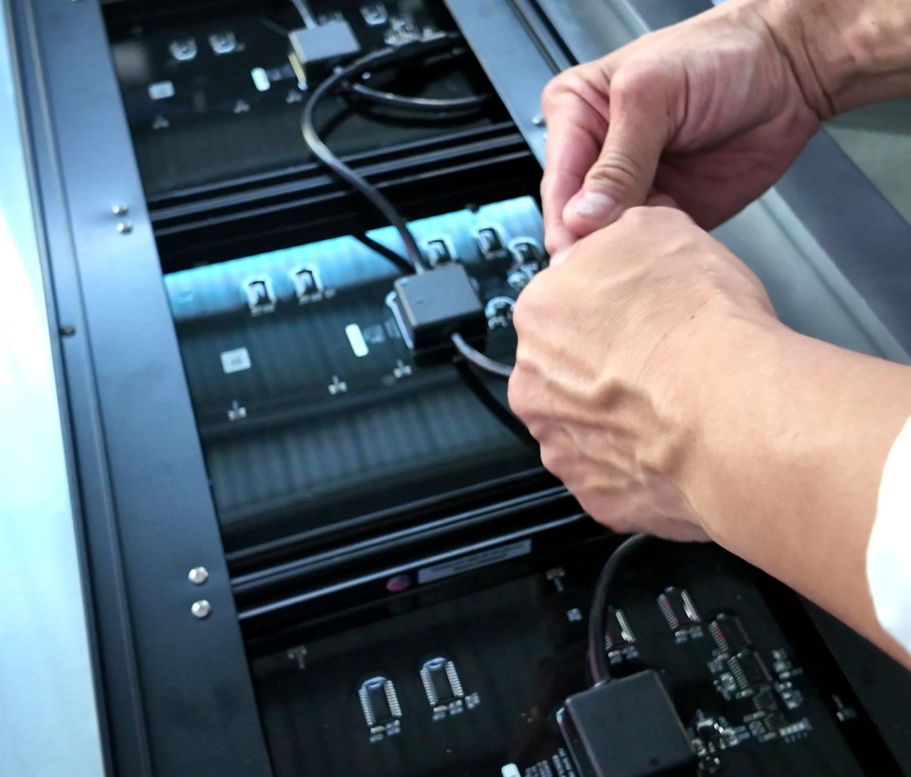

Four Digits to Five — Without Cutting Up the Light Box
Pump prices outgrew the sign. On an AVS Price Change Unit that is a frame extension and a module, not a new display — and you keep about 90 % of what is already on the pole.
We have been getting the same question from operators in the Philippines: pump prices have trended up, their four-digit price displays can no longer show the number, and they want to know whether the system they already own can be upgraded — or whether the whole monolith has to be rebuilt.
On an AVS Price Change Unit the answer is that it can be upgraded in place. You extend the frame, add one module, reconfigure from the remote, and re-seal. The cabinet stays, the controller stays, the cabling stays. This page walks through exactly what changes and what does not.
First, check whether you even need a fifth digit
Every digit on an AVS PCU carries its own decimal point. The dot is not fixed to one position at manufacture — it can be moved from one digit to the next at any time, from the remote, with no hardware change at all.
That matters more than it sounds. A number of sites that think they need a fifth character actually need the decimal in a different place. If that is your situation, the “upgrade” is a configuration change and costs you nothing but a few minutes at the sign. Check this before you order anything.
If you do need the extra character: two rails, not a new sign
Adding a fifth digit makes the display longer, so the frame has to grow with it. It does not follow that the sign has to be rebuilt.
- You buy two extension rails — the top and bottom members of the frame in a longer length.
- The corner frames stay. They are re-used as they are.
- You buy one more digit module for the new position.
- Everything else is re-used — roughly 90 % of the components on the sign today stay on the sign.
That 90 % is the whole point of building the unit in modules rather than as one sealed panel. A digit is a module with a connector on it; the frame is an aluminium extrusion; neither is welded to the other.

The six steps, in order
| 1 · Unplug the cables | Signal and power, disconnected at the side of the unit. |
|---|---|
| 2 · Adjust the frame | Swap the top and bottom members for the longer pair. Corner frames are re-used. |
| 3 · Install the module | Seat the additional digit module in the extended frame. Each module carries its own connector — plug and play. |
| 4 · Secure the module | Self-tapping screws through the aluminium into the main frame. Fixing into the extrusion does not touch the printed circuit board. |
| 5 · Connect the cables | Re-plug signal and power, then close the unit and confirm the water seal is properly made up. |
| 6 · Remote configuration | Set the operational mode and the decimal position from the remote so the controller addresses five characters instead of four. |


Steps 1 to 5 are mechanical and happen at the sign. Step 6 is the part people forget: a five-digit row is not a four-digit row with something added on the end, and the unit has to be told about the new position before it will display correctly.
Do not skip the re-seal
The one step where a retrofit can quietly go wrong is closing it back up. A forecourt display survives because it is sealed — our units ship with IP65-rated display panels and IP68 cabling connectors precisely because the environment is unforgiving. Any unit that has been opened has to go back together to the same standard. Done properly this is routine. Done as an afternoon job, it is how water gets in and how a display that had another decade in it starts failing at the corners a season later.
What to check on your own site first
The conversion itself is straightforward. What varies from site to site is whether the sign has room for the longer frame, so have these ready before you ask us to quote:
| Aperture inner dimensions | The clear opening in the sign face — this decides whether the longer frame fits behind it as-is |
|---|---|
| Current digit height and count | What is installed today, and on how many grade rows |
| Current decimal position | Because moving it may be all you need |
| Approach distance | Where the driver first reads the sign — see choosing the right digit size |
| Existing control method | Remote, counter terminal or POS / forecourt controller link — affects step 6, not the hardware |
Aperture dimensions plus one photograph from the driver’s approach is usually enough for our engineers to tell you whether your site is a straight frame extension or needs work on the face.
Do one before you do the network
If you run several stations, convert one first and stand at the approach to read it yourself before committing the rest. We build to order with no minimum quantity — one unit is a job we will take — so a single-site pilot is a normal order, not a favour.
And if the answer turns out to be that your existing units are not ours, tell us anyway. Knowing what is on the pole is usually enough for us to say whether it can be extended or whether you are better off replacing that row.
Send us the aperture and one photo
We’ll tell you whether your fifth digit is a decimal-point setting, a frame extension, or genuinely a new row — before anyone orders anything.